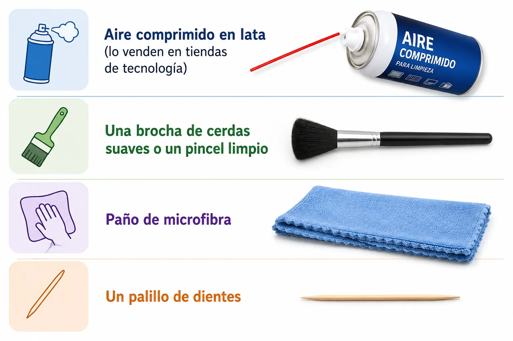
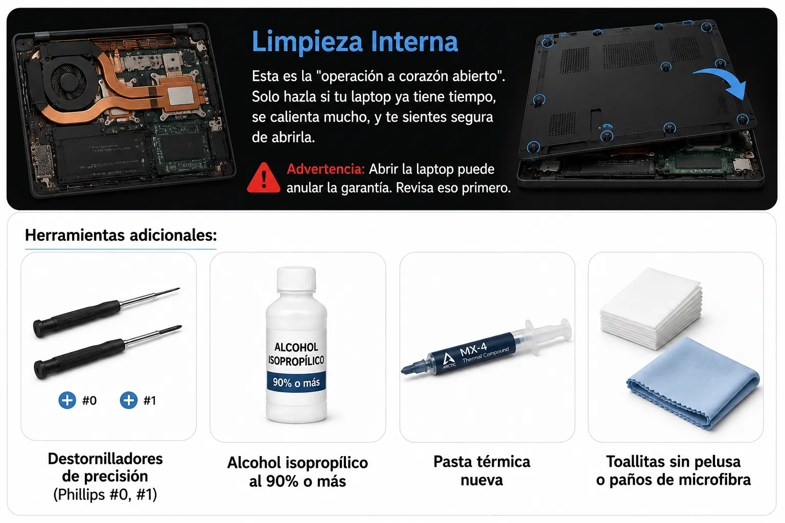
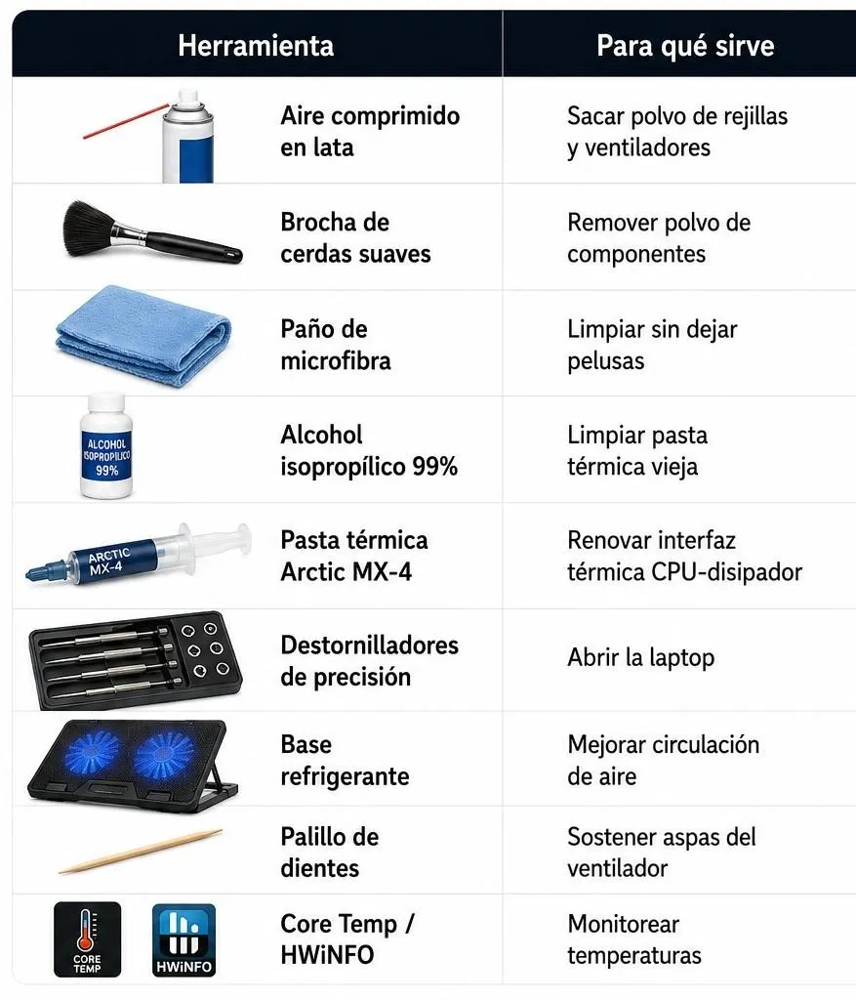

Limpieza física y prevención del thermal throttling
¿Por qué es importante el mantenimiento físico?
El mantenimiento físico de una computadora es súper importante porque ayuda a que el equipo funcione bien y dure mucho más tiempo. Con el paso del tiempo, el polvo se acumula en los ventiladores, las rejillas de ventilación y otros componentes internos. Cuando esto pasa, el aire no circula como debería y la computadora empieza a calentarse más de lo normal.
Cuando el equipo alcanza una temperatura muy alta, el procesador reduce automáticamente su velocidad para protegerse. A esto se le conoce como estrangulamiento térmico o Thermal Throttling. Aunque esto evita que los componentes se dañen, también hace que la computadora funcione más lenta y baje mucho su rendimiento. Imagina que estás jugando o editando un video y de repente todo empieza a irse a cámara lenta — eso es el Thermal throttling en acción.
¿Qué es el Thermal Throttling?
Es un mecanismo de protección del procesador. Cuando detecta la temperatura es muy alta, reduce automáticamente su velocidad de trabajo, para evitar sobrecalentamiento y daños internos.
- Lentitud general del sistema
- Caídas de FPS en videojuegos
- Programas que tardan una eternidad en abrir
- Ventiladores que suenan como jet despegando
Causas Principales del Sobrecalentamiento
Acumulación de Polvo (La más común)
El polvo actúa como un aislante térmico. Con el tiempo, bloquea los ventiladores (fans) y los disipadores de calor (heatsinks), reduciendo el flujo de aire hasta en un 50-70%. Esto puede elevar las temperaturas entre 10-20°C adicionales.

La pasta térmica deteriorada
La pasta térmica es el material que conecta el procesador con el disipador de calor. Con el tiempo (2-4 años) se seca o degrada, creando "puntos calientes". Reemplazarla puede bajar las temperaturas entre 5-20°C.

Ventilación Bloqueada
Usar la laptop en la cama, almohadas o mantas tapa las rejillas de ventilación. Incluso en una mesa, si la laptop está muy plana, el aire no circula bien debajo.

Superficies Blandas
Las camas, sofás y cojines no solo bloquean las rejillas, sino que también absorben el calor que debería disiparse hacia abajo.

Cargas de Trabajo Intensas
Juegos, edición de video, modelado 3D, o incluso tener 50 pestañas de Chrome abiertas mantienen el CPU/GPU al 90-100% de uso por horas, generando calor constante.

Batería Degradada
Una batería con más de 300 ciclos o con capacidad menor al 80% genera más calor al cargarse, aumentando la temperatura general del chasis entre 3-8°C.

Ambiente Caluroso
En verano, si la habitación está por encima de 30°C, la laptop tiene menos "margen" para disipar calor. La diferencia de temperatura entre el interior y el exterior es menor, por lo que el calor sale más lento.

Limpieza Externa
Esta es la más fácil y la que deberías hacer cada 3-6 meses.
Herramientas necesarias:
- Aire comprimido en lata
- Brocha de cerdas suaves o pincel limpio
- Paño de microfibra
- Palillo de dientes

Limpieza Interna

Herramientas para el mantenimiento
